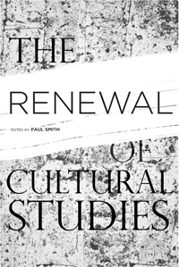

A collective manifesto for the future of Cultural Studies
A collective manifesto for the future of Cultural Studies


 A collective manifesto for the future of Cultural Studies
A collective manifesto for the future of Cultural Studies

|  |
The Renewal of Cultural Studiesedited by Paul Smithpaper EAN: 978-1-43990-253-0 (ISBN: 1-43990-253-4) |
"Paul Smith is one of the foremost practitioners of cultural studies. Here he has gathered people together to go beyond the old question�'What is cultural studies?'�and instead asks, 'What can cultural studies do now?' The outcome is a bold intervention into the human sciences that offers a radical rethinking of where we stand today."
—Toby Miller, author of Makeover Nation: The United States of Reinvention
Cultural Studies, once a burgeoning academic field, developed into a discipline in which just about any cultural text, object or event could be studied. The Renewal of Cultural Studies offers a panoramic view of the field, its assumptions, and its methodologies. Editor Paul Smith and thirty contributors map out new directions that will redefine and sustain the field of cultural studies.
In twenty-seven original essays, cultural studies is examined in relation to other disciplines—history, anthropology, literature, media, and American studies. The discipline is reviewed in the context of globalization, in relation to topics such as war, public policy, and labor, its pedagogy and politics, and in Marxist, feminist, and environmentalist contexts.
Smith wants to establish theoretical and methodological common ground among cultural studies scholars. Providing a �state of the discipline,� The Renewal of Cultural Studies asks, �What can and should the field of Cultural Studies be doing now?�
Excerpt available at www.temple.edu/tempress
"This study is a risky proposition. On the one hand, it risks succumbing to the soul searching that has long consumed Cultural Studies, a field in which the soul has played virtually no other role. On the other hand, this study risks producing an account of what Cultural Studies is that, in a rather pragmatic and thus American spirit, derives that identity from what the field does, or what it might do in the near future. But this is precisely what generates the heat, the excitement of Smith�s The Renewal of Cultural Studies. It is a stirring collection of statements by some leading figures in the field, all of which resist in different ways the feckless and rather common notion that Cultural Studies is some institutional incarnation of �whatever.� What emerges is a collectively enunciated position on how the �politically useful knowledge� generated by the field might be brought to bear on everything from the university and the state, to the nation and nature. Less a renewal, this study is a reboot, a kick in the butt of those committed to what Jameson once called the �desire� that is still becoming Cultural Studies. Have the cheek to read this book."
—John Mowitt, Department of Cultural Studies and Comparative Literature at the University of Minnesota-Twin Cities
"Comprising 27 original contributions, this collection represents several ways of practicing cultural studies and argues for increased attention to selected approaches, methods, and theories. Smith contributes the most readable and teachable pieces in the book: an introduction and an interview with American studies scholar Andrew Ross. Smith confronts difficulties that beset cultural studies, a field haunted by 'a residual desire for some form of political efficacy'--a desire it can neither fulfill nor disavow....[This is] a text that will matter. Summing Up: Recommended."
—Choice
"[If you want to] satisfy your craving for cultural studies� positioning then look no further than The Renewal of Cultural Studies, an anthology of position �papers� edited by Paul Smith. Each of the twenty five essays is short enough to read over breakfast and I imagine them being used by academics as early morning callisthenic [sic] exercises or performance enhancement supplements: you can use them to sharpen your sense of your own position (through agreements and disagreements); to find new ones; or simply to relish the arguments that matter to others....The book ends with a lively conversation between Paul Smith and Andrew Ross."
—New Formations: A Journal of Culture, Theory & Politics
"This book is a welcome immersion in the fundamentals of Cultural Studies from an early-twenty-first-century point of view, where most of its 'founding fathers' are studied, questioned, reconsidered, reconceptualized, and sometimes criticized.... [T]his collection is not meant as a mere revisiting of Cultural Studies, but should be seen as a genuine and innovative search for new directions.... In sum, The Renewal of Cultural Studies, which is clearly not meant for newcomers to the field, is, I believe, the most stimulating book on Cultural Studies in the last five years."
—The European Legacy
1. Introduction • Paul Smith
2. The Project of Cultural Studies: Heretical Doubts, New Horizon • Nick Couldry
3. The Nightmare Voice of Feminism: Feminism and Cultural Studies • Carol A. Stabile
4. Cultural Studies: Always Already Disciplinary • Randall K. Cohn, Sara Regina Mitcho and John M. Woolsey
5. From Ideology Critique to Intellectuality: Towards a Neo-Gramscian Political Pedagogy for Cultural Studies • Henry Krips
6. Attack of the Fifty-Foot Anthology! Adventures in Teaching Cultural Studies • Julie Rak
7. The Literary: Cultural Capital and the Specter of Elitism • Denise Albanese
8. New Aestheticism, the Culture Industry, and the Postcolonial Novel • Deepika Bahri
9. Cultural Studies and Theory: Once More from the Top with Feeling • Clare Birchall and Gary Hall
10. Cultural Studies and the Discourse of New Media • David Golumbia
11. Lost Objects: The Museum of Cinema • Sharon Willis
12. Three Dialectics for Media Studies • Matthew Tinkcom
13. What Cultural Studies Did to Anthropological Ethnography: From Baroque Textual Aesthetics Back to the Design of the Scenes of Inquiry • George E. Marcus
14. Longing for the Ethnographic • Lisa Breglia
15. �So-Called Cultural Histories�: Cultural Studies and History in the Age of One World • Michael Denning
16. A Marxist Methodology for Cultural Studies: Analyzing (Over)Production of the Commodity Sign • Max Gulias
17. Marxism after Cultural Studies • Randy Martin
18. Out of Context: Thinking Cultural Studies Diasporically • Grant Farred
19. Toward a Vulgar Cultural Studies • Eric Cazdyn
20. Where Is the "Economy"? Cultural Studies and Narratives of Capitalism • S. Charusheela
21. Cultural Studies and �Latin America�: Reframing the Questions • Sophia A. McClennen
22. Cultural Studies to Come • Mahmut Mutman
23. Do the Math: Cultural Studies into Public Policy Needs a New Equation • Marcus Breen
24. Culture and War • Timothy W. Luke
25. Communication and Cultural Labor • Vincent Mosco
26. Towards a Green Marxist Cultural Studies: Notes on Labor,
Nature, and the Historical Specificity of Capitalism • Michelle Yates
27. Cultural Studies: A Conversation • Andrew Ross and Paul Smith
Contributors
Index
Paul Smith is Professor of Cultural Studies at George Mason University.
Cultural Studies
American Studies
Mass Media and Communications
© 2015 Temple University. All Rights Reserved. This page: http://www.temple.edu/tempress/titles/2088_reg.html.